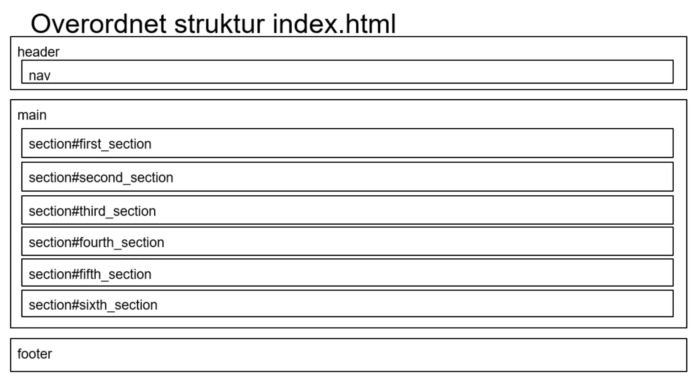

02.04.02
Responsive Site V2
Opgaven
Opgaven i grundlæggende web forløb, var at kode en responsiv mobile-first hjemmeside i HTML og CSS ud fra wireframes og layout diagrammer vi havde fået tildelt. Hele forløbet førte vej til den sidste opgave som var den færdige version af vores hjemmeside. Opgave startede med at vi fik tildelt en stilart som vi analysere og skulle genskabe på vores egen hjemmeside senere hen.
Min rolle
Vi havde fået tildelt grupper hvor vi kunne hjælpe hinanden, men opgave i sig selv var individuel. Derfor er de fleste af opgaverne løst i et forum af medstuderende, men løst individuelt.
Klik her for at se det endelige produkt
Hvad har jeg lært?
Design analyse
Opgaven startede med en design analyse af den tildelte stilart (Neumorphism), her analyserede jeg layout/kompositionen, farver/teksturer og UI elementer og fotostil. Udfra dette kunne jeg lave et Styletile og Moodboard som jeg kunne bruge til at genskabe Neumorphism på min hjemmeside. En design analyse har jeg brugt igen i tema 05 til da vi skulle re-designe en hjemmeside. Her kunne vi så finde nogle af grundelementerne fra deres hjemmeside og tag med videre i den nye hjemmeside.
HTML og CSS
Vores endelige produkt skulle være en responsive hjemmeside, som fulgte en skabelon af en wireframe og layout diagrammer. Vi lærte grundlæggende HTML(Semantiske elementer) og HTML dokumentstruktur, efterfulgt af CSS i form af layout, (Block, Inline, Grid og flexbox), styling af hjemmeside, box modellen og media queries til at skabe en responsive side. Jeg brugte denne viden til at skabe en responsive hjemmeside som fulgte det tildelte layout diagram og wireframe. Alt denne viden har jeg taget videre til alle de videregående opgaver hvor vi har skulle bygge hjemmeside, og herefter bygget videre på den. Både fra det vi videre hen har lært i skolen og viden fundet på nettet.
Refleksion
Første forløb var med til at danne grundlag for vores viden omkring design og hjemmeside konventioner. Den endelige hjemmeside som jeg afleverede, var den første hjemmeside som jeg nogensinde havde lavet. Alt den viden jeg fik har jeg bygget videre på i de senere forløb, og de værktøjer og færdigheder jeg anskaffet mig er kun blevet bedre.
Læs mere om andre projekter ved at klikke her